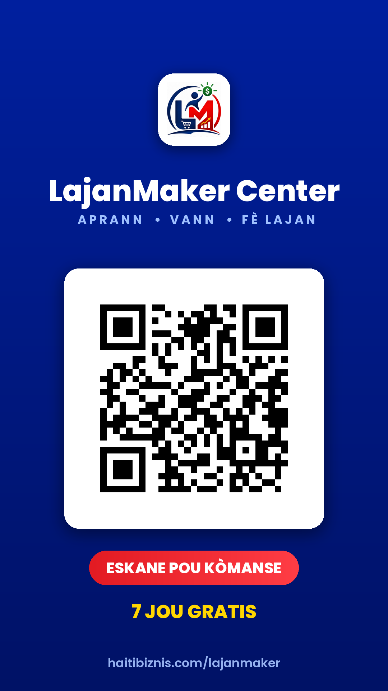

Permanent QR code — for the promo video, and for print
Yes — use it for the video. But never let it put the QR code in the picture. An AI draws something that looks like a code; it is not a real one and nothing scans. It has already happened twice on your material.
So: make the video in Gemini with no code in it at all, then add the real one afterwards. These two clips are made for exactly that — 5 seconds each, ready to drop on the end.
End card clip — upright video End card clip — sideways videoPut the sideways card into an upright video and the editor will either add black bars, which is fine, or squeeze it, which makes the code a rectangle instead of a square. A squeezed code never scans.
Whenever any tool hands you a picture or a video with a code on it, hold your own phone camera up to it before you send it anywhere. If your phone does not open LajanMaker Center, the code is a drawing. There is no middle ground and no fixing it in that file — the real one has to be placed on top.
Full screen, 1080 × 1920. Drop it at the end of the promo, or hold it on screen while you talk. Everything is already on it — the logo, the name, the slogan, the code and the free trial.

Download the vertical end card Download the wide version (1920 × 1080)This one has a transparent background outside the white card, so it sits on any video. The white card behind the code stays — a see-through QR disappears the moment the picture behind it goes dark.
Download the overlaySame code, laid out the same way as the MsouWout, MyPlopPlop and HaitiBiznis codes you already have, so they can sit side by side.
Code with the name under it Just the code, nothing else Vector file (SVG) — for a designerThe code points at haitibiznis.com/lajanmaker, and that address forwards to the app. It is not from a free QR website that expires, and there is no account to keep paying for.
If LajanMaker Center ever moves — its own domain, a listing in the Play Store, anything — tell me and I change where that one address points. Every flyer, card and video already made keeps working. Nothing gets reprinted.
| What it opens | LajanMaker Center, 7 days free |
| Expires | Never |
| Cost to keep alive | Nothing |
| Tested at | 1–5 cm printed, 480p–1080p video, with glare, blur and held at an angle |
They never encode a real one — they draw a picture that looks like one. It has happened twice already on your material and both times nothing scanned. Use them for the artwork, then place the real file from this page on top.
The white edge is part of the code. Scale it evenly, keep it square, leave the white.
Hand the designer the SVG above and tell them: place it, resize it, nothing else.
{kind=link}
{kind=link}
{kind=link}
{kind=link}
{kind=link}
{kind=link}